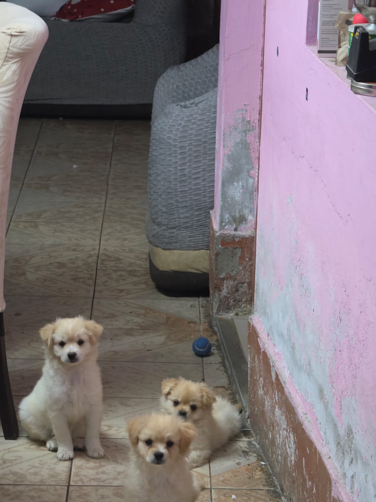

Inicio de Año y Nuevos Propósitos
Comenzando el año con energía, organizando metas personales, proyectos académicos y preparando todo para los grandes retos de los próximos meses.
Comenzando el año con energía, organizando metas personales, proyectos académicos y preparando todo para los grandes retos de los próximos meses.

Con mucha constancia y práctica, culminé satisfactoriamente todos los ciclos del nivel intermedio de inglés. Un paso fundamental para mi crecimiento profesional.

Recorriendo los hermosos paisajes de Cajamarca, disfrutando de su historia, gastronomía tradicional, los Baños del Inca y momentos inolvidables.

Un año más de vida rodeado del cariño de mi familia y amigos. Un día lleno de gratitud, buenos deseos y celebración.
Uno de los momentos más emotivos del año: la llegada de mi sobrina Fernanda, llenando de luz, ternura y felicidad a toda nuestra familia.

La familia creció aún más en julio con el nacimiento de nuestras mascotas, trayendo alegría, travesuras y compañía todos los días.

Retomando los estudios con entusiasmo al iniciar el nivel avanzado de inglés, perfeccionando la fluidez y comprensión para alcanzar el dominio total del idioma.

Viaje a la Ciudad Blanca de Arequipa para realizar mi pasantía. Una experiencia enriquecedora combinando aprendizaje práctico, nuevos contactos y vistas del Misti.